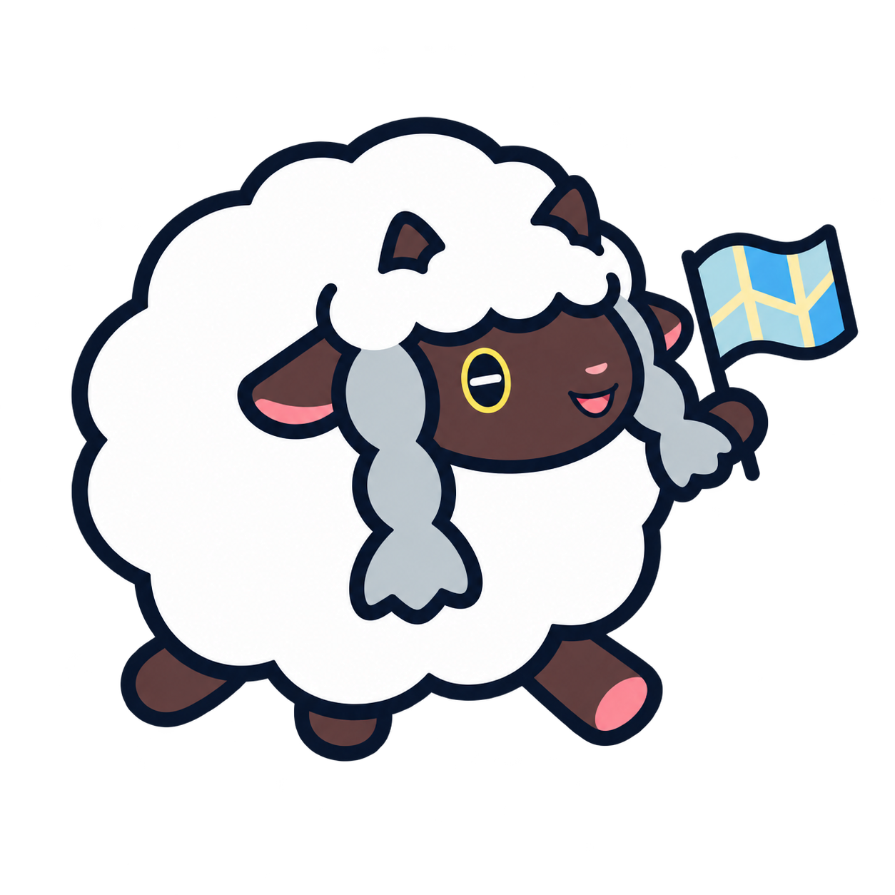

Wooloo
Tu próxima aventura
Vamos a descubrir el camino.

Destinos populares
desde tu ubicaciónMis viajes
Un nuevo viaje con Wooloo
Tú eliges el destino.
📍 Mi ubicación actual
Se obtiene por GPS al calcular el recorrido.
Origen: mi ubicación actual. Buscando GPS…
Paradas seleccionadas
Añadir lugares recomendados
Tiempo extra de conducción respecto a tu recorrido, sin incluir la estadía.
GPS sin activar
TU RECORRIDOCalculando por carreteras…
—km restantes
—Tiempo total
—Llegada